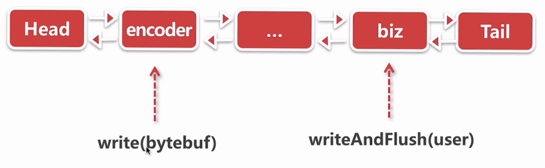
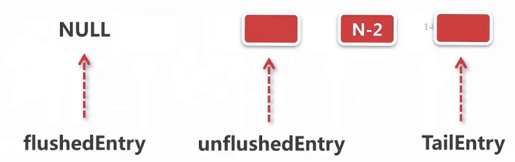

如何把对象变成字节流,最终写到Socket底层?
writeAndFlush() 
重要的ChannelHandler
biz :生成一个对象,调用writeAndFlush写出去encoder :对该对象进行编码
示例代码 1 2 3 4 5 6 7 8 ServerBootstrap b = new ServerBootstrap(); b.group(bossGroup, workerGroup).channel(NioServerSocketChannel.class).childHandler(new ChannelInitializer<SocketChannel>() { @Override public void initChannel (SocketChannel ch) ch.pipeline().addLast(new Encoder()); ch.pipeline().addLast(new BizHandler()); } });
这里定义的BizHandler如下:
1 2 3 4 5 6 7 public class BizHandler extends ChannelInboundHandlerAdapter @Override public void channelRead (ChannelHandlerContext ctx, Object msg) throws Exception User user = new User(19 , "zhangsan" ); ctx.channel().writeAndFlush(user); } }
Encoder如下:
1 2 3 4 5 6 7 8 9 10 public class Encoder extends MessageToByteEncoder <User > @Override protected void encode (ChannelHandlerContext ctx, User user, ByteBuf out) throws Exception byte [] bytes = user.getName().getBytes(); out.writeInt(4 + bytes.length); out.writeInt(user.getAge()); out.writeBytes(bytes); } }
Encoder的结果:
1 2 3 4 5 * --------------------- *| 4 | 4 | ? | * --------------------- *| length | age | name | * ---------------------
通过上章学习的长度域解码器就能解码.问题,这个ByteBuf out是从哪来的.又如何通过out.writeBytes(bytes);写入socket底层?
writeAndFlush()处理步骤
从tail节点开始往前传播
逐个 调用channelHandler的write方法
逐个调用channelHandler的flush方法
1.从tail节点开始往前传播 跟到BizHandler 的ctx.channel().writeAndFlush(user);步骤
1 2 3 4 5 6 7 8 9 10 @Override public ChannelFuture writeAndFlush (Object msg) return pipeline.writeAndFlush(msg); } @Override public final ChannelFuture writeAndFlush (Object msg) return tail.writeAndFlush(msg); }
它会调用tail节点,从它开始writeAndFlush,继续往下看,最终调用下面:
1 2 3 4 5 6 7 8 9 10 11 12 13 14 15 16 17 18 19 20 21 private void write (Object msg, boolean flush, ChannelPromise promise) AbstractChannelHandlerContext next = findContextOutbound(); final Object m = pipeline.touch(msg, next); EventExecutor executor = next.executor(); if (executor.inEventLoop()) { if (flush) { next.invokeWriteAndFlush(m, promise); } else { next.invokeWrite(m, promise); } } else { AbstractWriteTask task; if (flush) { task = WriteAndFlushTask.newInstance(next, m, promise); } else { task = WriteTask.newInstance(next, m, promise); } safeExecute(executor, task, promise, m); } }
跟踪next.invokeWriteAndFlush(m, promise);的步骤:
1 2 3 4 5 6 7 8 9 private void invokeWriteAndFlush (Object msg, ChannelPromise promise) if (invokeHandler()) { invokeWrite0(msg, promise); invokeFlush0(); } else { writeAndFlush(msg, promise); } }
而当flush=false的时候它只会进行第二步的invokeWrite0(msg, promise);
2.逐个 调用channelHandler的write方法 先分析invokeWrite0:
1 2 3 4 5 6 7 8 private void invokeWrite0 (Object msg, ChannelPromise promise) try { ((ChannelOutboundHandler) handler()).write(this , msg, promise); } catch (Throwable t) { notifyOutboundHandlerException(t, promise); } }
传播过程中会到我们自己编写的Encoder.Encoder它本身是没有重写write,所以调用的是他父类MessageToByteEncoder的:
1 2 3 4 5 6 7 8 9 10 11 12 13 14 15 16 17 18 19 20 21 22 23 24 25 26 27 28 @Override public void write (ChannelHandlerContext ctx, Object msg,//从BizHandler传入的User对象 ChannelPromise promise) throws Exception ByteBuf buf = null ; try { if (acceptOutboundMessage(msg)) { I cast = (I) msg; buf = allocateBuffer(ctx, cast, preferDirect); try { encode(ctx, cast, buf); } finally { ReferenceCountUtil.release(cast); } if (buf.isReadable()) { ctx.write(buf, promise); } else { buf.release(); ctx.write(Unpooled.EMPTY_BUFFER, promise); } buf = null ; } else { ctx.write(msg, promise); } ... }
这里encode的细节待会会涉及到.
3.逐个调用channelHandler的flush方法 再看刚才的invokeFlush0();步骤,它的传播方式与write类似
1 2 3 4 5 6 7 private void invokeFlush0 () try { ((ChannelOutboundHandler) handler()).flush(this ); } catch (Throwable t) { notifyHandlerException(t); } }
通常情况下这个flush()不会被覆盖,包括我们用于encode的MessageToByteEncoder.它会一直传播直到head节点
整理一下:
对User调用write时,会从tail一直往下传播,中途我们自己写的encoder会把User对象取出来进行一系列操作,最后传给Head节点.Head节点也会进行一些处理
对User调用flush时,会从tail一直往下传播,中途不会有人插手,直到传给Head节点.Head节点会进行一些处理
编码器处理逻辑:MessageToByteEncoder 本节分析write().MessageToByteEncoder用于把对象变成字节.
wtite()的步骤:
匹配对象 内存分配 编码实现 Encoder中覆盖的encode().可以实现自定义的协议,示例中用的就是基于长度域的协议释放对象 传播数据 释放内存
1 2 3 4 5 6 7 8 9 10 11 12 13 14 15 16 17 18 19 20 21 22 23 24 25 26 27 28 29 30 31 32 33 34 @Override public void write (ChannelHandlerContext ctx, Object msg,//从BizHandler传入的User对象 ChannelPromise promise) throws Exception ByteBuf buf = null ; try { if (acceptOutboundMessage(msg)) { I cast = (I) msg; buf = allocateBuffer(ctx, cast, preferDirect); try { encode(ctx, cast, buf); } finally { ReferenceCountUtil.release(cast); } if (buf.isReadable()) { ctx.write(buf, promise); } else { buf.release(); ctx.write(Unpooled.EMPTY_BUFFER, promise); } buf = null ; } else { ctx.write(msg, promise); } .. finally { if (buf != null ) { buf.release(); } } }
1.匹配对象 调用下面判断是否能处理User对象
1 2 3 4 public boolean acceptOutboundMessage (Object msg) throws Exception return matcher.match(msg); }
它会通过反射进行判断
1 2 3 4 @Override public boolean match (Object msg) return type.isInstance(msg); }
2.内存分配 write()中的buf = allocateBuffer(ctx, cast, preferDirect);进行内存分配
1 2 3 4 5 6 7 8 9 10 protected ByteBuf allocateBuffer (ChannelHandlerContext ctx, I msg,//User boolean preferDirect) throws Exception if (preferDirect) { return ctx.alloc().ioBuffer(); } else { return ctx.alloc().heapBuffer(); } }
3.编码实现 通过encode(ctx, cast, buf);调用在Encoder中自定义重写的方法:
1 2 3 4 5 6 7 8 9 @Override protected void encode (ChannelHandlerContext ctx, User user, ByteBuf out) throws Exception byte [] bytes = user.getName().getBytes(); out.writeInt(4 + bytes.length); out.writeInt(user.getAge()); out.writeBytes(bytes); }
4.释放对象 下一步通过ReferenceCountUtil.release(cast);释放对象
1 2 3 4 5 6 7 public static boolean release (Object msg) if (msg instanceof ReferenceCounted) { return ((ReferenceCounted) msg).release(); } return false ; }
5.传播数据 调用ctx.write(buf, promise);,把二进制数据往前扔,直到Head节点,他负责把数据写到socket底层
6.释放内存 如果中途出现异常,最后在finally块中对buf进行释放
1 2 3 4 5 } finally { if (buf != null ) { buf.release(); } }
write-写buffer队列 编码完成后会把包含二进制数据的ByteBuf传播到head的write()
write-写buffer队列 的步骤
direct化ByteBuf
插入写队列.
设置写状态
1 2 3 4 5 6 7 8 9 10 11 12 13 14 15 16 17 18 19 20 21 22 23 24 25 26 27 28 @Override public void write (ChannelHandlerContext ctx, Object msg, ChannelPromise promise) throws Exception unsafe.write(msg, promise); } --- public final void write (Object msg,//包含User数据的ByteBuf ChannelPromise promise) assertEventLoop(); ChannelOutboundBuffer outboundBuffer = this .outboundBuffer; .. int size; try { msg = filterOutboundMessage(msg); size = pipeline.estimatorHandle().size(msg); if (size < 0 ) { size = 0 ; } } catch (Throwable t) { safeSetFailure(promise, t); ReferenceCountUtil.release(msg); return ; } outboundBuffer.addMessage(msg, size, promise); }
1.direct化ByteBuf 看一下filterOutboundMessage(msg)如何direct化ByteBuf
1 2 3 4 5 6 7 8 9 10 11 12 @Override protected final Object filterOutboundMessage (Object msg) if (msg instanceof ByteBuf) ByteBuf buf = (ByteBuf) msg; if (buf.isDirect()) { return msg; } return newDirectBuffer(buf); } }
非对外内存到对外内存的转换
1 2 3 4 5 6 7 8 9 10 11 12 13 14 15 16 17 18 19 20 21 22 23 24 25 protected final ByteBuf newDirectBuffer (ByteBuf buf) final int readableBytes = buf.readableBytes(); if (readableBytes == 0 ) { ReferenceCountUtil.safeRelease(buf); return Unpooled.EMPTY_BUFFER; } final ByteBufAllocator alloc = alloc(); if (alloc.isDirectBufferPooled()) { ByteBuf directBuf = alloc.directBuffer(readableBytes); directBuf.writeBytes(buf, buf.readerIndex(), readableBytes); ReferenceCountUtil.safeRelease(buf); return directBuf; } final ByteBuf directBuf = ByteBufUtil.threadLocalDirectBuffer(); if (directBuf != null ) { directBuf.writeBytes(buf, buf.readerIndex(), readableBytes); ReferenceCountUtil.safeRelease(buf); return directBuf; } return buf; }
2.插入写队列 通过outboundBuffer.addMessage(msg, size, promise)把刚才创建的堆外内存插入到outboundBuffer,也就是写的缓冲区中
它里边包含了几个指针,关于这些指针的定义:
1 2 3 4 5 6 7 8 private Entry flushedEntry;private Entry unflushedEntry;private Entry tailEntry;
也就是说前面一段flush过的是可以写入Socket的部分,后面则还不能写入.
再看它的addMessage():
1 2 3 4 5 6 7 8 9 10 11 12 13 14 15 16 17 18 19 public void addMessage (Object msg, int size, ChannelPromise promise) Entry entry = Entry.newInstance(msg, size, total(msg), promise); if (tailEntry == null ) { flushedEntry = null ; tailEntry = entry; } else { Entry tail = tailEntry; tail.next = entry; tailEntry = entry; } if (unflushedEntry == null ) { unflushedEntry = entry; } incrementPendingOutboundBytes(size, false ); }
第一次调用write:
第N次调用:

3.设置写状态 同样在#addMessage里设置写状态
1 2 3 4 5 public void addMessage (Object msg, int size, ChannelPromise promise) ..2 .插入写队列 incrementPendingOutboundBytes(size, false ); }
目的是统计当前有多少直接需要被写出
1 2 3 4 5 6 7 8 9 private void incrementPendingOutboundBytes (long size, boolean invokeLater) long newWriteBufferSize = TOTAL_PENDING_SIZE_UPDATER.addAndGet(this , size); if (newWriteBufferSize > channel.config().getWriteBufferHighWaterMark()) { setUnwritable(invokeLater); } }
如果要写出的大小超过64K
1 2 3 4 5 6 7 8 9 10 11 12 13 14 private void setUnwritable (boolean invokeLater) for (;;) { final int oldValue = unwritable; final int newValue = oldValue | 1 ; if (UNWRITABLE_UPDATER.compareAndSet(this , oldValue, newValue)) { if (oldValue == 0 && newValue != 0 ) { fireChannelWritabilityChanged(invokeLater); } break ; } } }
也就是说如果要写出的大小超过64K,就传播到channelHandler里面, 告诉现在不可写
flush-刷新buffer队列 步骤:
添加刷新标志并设置写状态
遍历buffer队列,过滤ByteBuf
调用jdk底层api进行自旋写
1 2 3 4 5 6 7 8 9 10 11 12 13 14 15 16 17 18 19 @Override public void flush (ChannelHandlerContext ctx) throws Exception unsafe.flush(); } --- @Override public final void flush () assertEventLoop(); ChannelOutboundBuffer outboundBuffer = this .outboundBuffer; if (outboundBuffer == null ) { return ; } outboundBuffer.addFlush(); flush0(); }
1.添加刷新标志并设置写状态 这一步是调用outboundBuffer.addFlush();:
1 2 3 4 5 6 7 8 9 10 11 12 13 14 15 16 17 18 19 20 21 22 public void addFlush () Entry entry = unflushedEntry; if (entry != null ) { if (flushedEntry == null ) { flushedEntry = entry; } do { flushed ++; if (!entry.promise.setUncancellable()) { int pending = entry.cancel(); decrementPendingOutboundBytes(pending, false , true ); } entry = entry.next; } while (entry != null ); unflushedEntry = null ; } }
下面就是设置写状态,和之前write时的过程相反.
1 2 3 4 5 6 7 8 9 10 11 12 13 private void decrementPendingOutboundBytes (long size, boolean invokeLater, boolean notifyWritability) if (size == 0 ) { return ; } long newWriteBufferSize = TOTAL_PENDING_SIZE_UPDATER.addAndGet(this , -size); if (notifyWritability && newWriteBufferSize < channel.config().getWriteBufferLowWaterMark()) { setWritable(invokeLater); } }
也就是说缓存的大小大于64K时设置为不可写,小于32K时又设置为可写
此时的状态如下图:
2.遍历buffer队列,过滤ByteBuf,3.调用jdk底层api进行自旋写 第2步和3步是在flush0();中进行,它又会调用下面的io.netty.channel.nio.AbstractNioByteChannel#doWrite
1 2 3 4 5 6 7 8 9 10 11 12 13 14 15 16 17 18 19 20 21 22 23 24 25 26 27 28 29 30 31 32 33 34 35 36 37 38 39 40 41 42 43 44 45 46 47 48 49 50 51 52 53 protected void doWrite (ChannelOutboundBuffer in) throws Exception int writeSpinCount = -1 ; boolean setOpWrite = false ; for (;;) { Object msg = in.current(); ... if (msg instanceof ByteBuf) { ByteBuf buf = (ByteBuf) msg; int readableBytes = buf.readableBytes(); if (readableBytes == 0 ) { in.remove(); continue ; } boolean done = false ; long flushedAmount = 0 ; if (writeSpinCount == -1 ) { writeSpinCount = config().getWriteSpinCount(); } for (int i = writeSpinCount - 1 ; i >= 0 ; i --) { int localFlushedAmount = doWriteBytes(buf); if (localFlushedAmount == 0 ) { setOpWrite = true ; break ; } flushedAmount += localFlushedAmount; if (!buf.isReadable()) { done = true ; break ; } } in.progress(flushedAmount); if (done) { in.remove(); } else { break ; } } } incompleteWrite(setOpWrite); }
分析int localFlushedAmount = doWriteBytes(buf);那一步,此时把buf写到socket的:
1 2 3 4 5 6 protected int doWriteBytes (ByteBuf buf) throws Exception final int expectedWrittenBytes = buf.readableBytes(); return buf.readBytes(javaChannel(), expectedWrittenBytes); }
此时默认情况下是PooledDirectByteBuf
1 2 3 4 5 6 7 8 9 10 11 @Override public int readBytes (GatheringByteChannel out, int length) throws IOException checkReadableBytes(length); int readBytes = getBytes(readerIndex, out, length, true ); readerIndex += readBytes; return readBytes; }
1 2 3 4 5 6 7 8 9 private int getBytes (int index, FileChannel out, long position, int length, boolean internal) throws IOException ByteBuffer tmpBuf = internal ? internalNioBuffer() : memory.duplicate(); index = idx(index); tmpBuf.clear().position(index).limit(index + length); return out.write(tmpBuf, position); }
总结 如何把对象变成字节流,最终写到Socket底层?
自定义的ChannelHandler通过writeAndFlush(user),试图写出
write(user)这一步会从Tail往前传播,到我们自定义的Encoder,Encoder把user转成2进制数据并放入堆外bytebuf向前传播
head拿到这个bytebuf后暂时把他保存到一个缓存中,缓存是链表结构
之后,flush()会从Tail往前传播,直到head
head把当前缓存中的ByteBuf转换成JDK的ByteBuf,然后通过JDK底层API和自旋锁输出到底层Channel,也就是socket